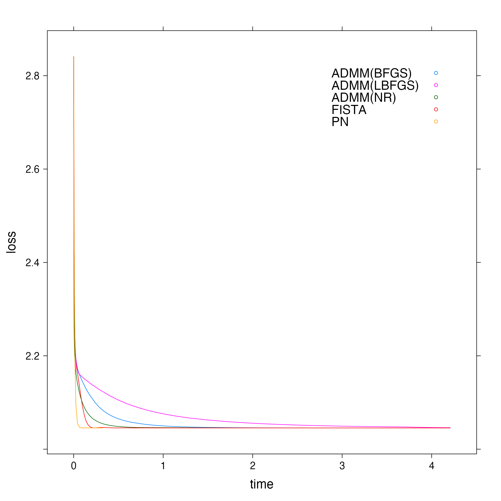

Binomial Likelihood Benchmarks
Akarsh Goyal
2020-08-26
binomial.RmdThis tutorial documents the performance of the solvers for Binomial Likelihood function.
Well Conditioned Problems
n > p
set.seed(34) d <- randomProblem(1000, 10, response="binomial", density = 1, rho=0) # Obtaining fits for each solver and plotting loss vs time graph f <- getBenchmarks(d$x, d$y, family="binomial", path_length = 100) #> [1] "Time taken by FISTA : 165.466914994" #> [1] "Time taken by ADMM(NR) : 143.507155793" #> [1] "Time taken by ADMM(BFGS) : 446.363535522" #> [1] "Time taken by ADMM(L-BFGS) : 607.862390456" #> [1] "Time taken by PN : 14.676853141"
# Plot for middle alpha in the path if (f$path_length > 1) { data <- getBenchmarks(d$x, d$y, family="binomial", alpha=f$alpha[(f$path_length %/% 2)+1]) plt_middle_well1 <- xyplot(loss ~ time, group = solver, data = data, auto.key = list(corner = c(0.9, 0.9)), type = "l") update(plt_middle_well1, par.settings = list(fontsize = list(text = 18))) } #> [1] "Time taken by FISTA : 1.265779037" #> [1] "Time taken by ADMM(NR) : 1.45715949" #> [1] "Time taken by ADMM(BFGS) : 5.173703183" #> [1] "Time taken by ADMM(L-BFGS) : 10.754448566" #> [1] "Time taken by PN : 0.152597043"

# Plot for 10th alpha in the path if (f$path_length >= 10) { data <- getBenchmarks(d$x, d$y, family="binomial", alpha=f$alpha[10]) plt_10_well1 <- xyplot(loss ~ time, group = solver, data = data, auto.key = list(corner = c(0.9, 0.9)), type = "l") update(plt_10_well1, par.settings = list(fontsize = list(text = 18))) } #> [1] "Time taken by FISTA : 0.284198863" #> [1] "Time taken by ADMM(NR) : 0.115611547" #> [1] "Time taken by ADMM(BFGS) : 0.485002007" #> [1] "Time taken by ADMM(L-BFGS) : 0.4203808" #> [1] "Time taken by PN : 0.028693203"

# Plot for last alpha in the path data <- getBenchmarks(d$x, d$y, family="binomial", alpha=f$alpha[f$path_length]) #> [1] "Time taken by FISTA : 3.25799463" #> [1] "Time taken by ADMM(NR) : 3.703496726" #> [1] "Time taken by ADMM(BFGS) : 9.966844296" #> [1] "Time taken by ADMM(L-BFGS) : 16.483804202" #> [1] "Time taken by PN : 0.29411681" plt_last_well1 <- xyplot(loss ~ time, group = solver, data = data, auto.key = list(corner = c(0.9, 0.9)), type = "l") update(plt_last_well1, par.settings = list(fontsize = list(text = 18)))

n < p
set.seed(4) d <- randomProblem(20, 50, response="binomial", density = 1, rho=0) # Obtaining fits for each solver and plotting loss vs time graph f <- getBenchmarks(d$x, d$y, family="binomial", path_length = 100) #> [1] "Time taken by FISTA : 2.621536497" #> [1] "Time taken by ADMM(NR) : 243.284627702" #> [1] "Time taken by ADMM(BFGS) : 1261.48004105" #> [1] "Time taken by ADMM(L-BFGS) : 46.137747901" #> [1] "Time taken by PN : 1305.002619678"
# Plot for middle alpha in the path if (f$path_length > 1) { data <- getBenchmarks(d$x, d$y, family="binomial", alpha=f$alpha[(f$path_length %/% 2)+1]) plt_middle_well2 <- xyplot(loss ~ time, group = solver, data = data, auto.key = list(corner = c(0.9, 0.9)), type = "l") update(plt_middle_well2, par.settings = list(fontsize = list(text = 18))) } #> [1] "Time taken by FISTA : 0.017126416" #> [1] "Time taken by ADMM(NR) : 0.97316912" #> [1] "Time taken by ADMM(BFGS) : 6.321999025" #> [1] "Time taken by ADMM(L-BFGS) : 0.22655249" #> [1] "Time taken by PN : 2.31367639"
# Plot for 10th alpha in the path if (f$path_length >= 10) { data <- getBenchmarks(d$x, d$y, family="binomial", alpha=f$alpha[10]) plt_10_well2 <- xyplot(loss ~ time, group = solver, data = data, auto.key = list(corner = c(0.9, 0.9)), type = "l") update(plt_10_well2, par.settings = list(fontsize = list(text = 18))) } #> [1] "Time taken by FISTA : 0.00341708" #> [1] "Time taken by ADMM(NR) : 0.08425445" #> [1] "Time taken by ADMM(BFGS) : 0.62899607" #> [1] "Time taken by ADMM(L-BFGS) : 0.02137659" #> [1] "Time taken by PN : 0.05844837"
# Plot for last alpha in the path data <- getBenchmarks(d$x, d$y, family="binomial", alpha=f$alpha[f$path_length]) #> [1] "Time taken by FISTA : 0.089189706" #> [1] "Time taken by ADMM(NR) : 9.205826212" #> [1] "Time taken by ADMM(BFGS) : 44.858248691" #> [1] "Time taken by ADMM(L-BFGS) : 1.812802183" #> [1] "Time taken by PN : 81.46496696" plt_last_well2 <- xyplot(loss ~ time, group = solver, data = data, auto.key = list(corner = c(0.9, 0.9)), type = "l") update(plt_last_well2, par.settings = list(fontsize = list(text = 18)))

Badly Conditioned Problems
n > p
set.seed(34) d <- randomProblem(1000, 10, response="binomial", density = 1, rho=0.95) # Obtaining fits for each solver and plotting loss vs time graph f <- getBenchmarks(d$x, d$y, family="binomial", path_length = 100) #> [1] "Time taken by FISTA : 723.448900466" #> [1] "Time taken by ADMM(NR) : 452.164773735" #> [1] "Time taken by ADMM(BFGS) : 1138.482356217" #> [1] "Time taken by ADMM(L-BFGS) : 1171.332134284" #> [1] "Time taken by PN : 17.217471255"
# Plot for middle alpha in the path if (f$path_length > 1) { data <- getBenchmarks(d$x, d$y, family="binomial", alpha=f$alpha[(f$path_length %/% 2)+1]) plt_middle_bad1 <- xyplot(loss ~ time, group = solver, data = data, auto.key = list(corner = c(0.9, 0.9)), type = "l") update(plt_middle_bad1, par.settings = list(fontsize = list(text = 18))) } #> [1] "Time taken by FISTA : 2.140471635" #> [1] "Time taken by ADMM(NR) : 1.66037631" #> [1] "Time taken by ADMM(BFGS) : 4.111938029" #> [1] "Time taken by ADMM(L-BFGS) : 5.618903618" #> [1] "Time taken by PN : 0.156400743"

# Plot for 10th alpha in the path if (f$path_length >= 10) { data <- getBenchmarks(d$x, d$y, family="binomial", alpha=f$alpha[10]) plt_10_bad1 <- xyplot(loss ~ time, group = solver, data = data, auto.key = list(corner = c(0.9, 0.9)), type = "l") update(plt_10_bad1, par.settings = list(fontsize = list(text = 18))) } #> [1] "Time taken by FISTA : 0.058946457" #> [1] "Time taken by ADMM(NR) : 0.011965174" #> [1] "Time taken by ADMM(BFGS) : 0.025619053" #> [1] "Time taken by ADMM(L-BFGS) : 0.033633627" #> [1] "Time taken by PN : 0.002788153"
# Plot for last alpha in the path data <- getBenchmarks(d$x, d$y, family="binomial", alpha=f$alpha[f$path_length]) #> [1] "Time taken by FISTA : 9.324992195" #> [1] "Time taken by ADMM(NR) : 4.208144911" #> [1] "Time taken by ADMM(BFGS) : 8.254583068" #> [1] "Time taken by ADMM(L-BFGS) : 9.021598968" #> [1] "Time taken by PN : 0.366578986" plt_last_bad1 <- xyplot(loss ~ time, group = solver, data = data, auto.key = list(corner = c(0.9, 0.9)), type = "l") update(plt_last_bad1, par.settings = list(fontsize = list(text = 18)))

n < p
set.seed(4) d <- randomProblem(20, 50, response="binomial", density = 1, rho=0.95) # Obtaining fits for each solver and plotting loss vs time graph f <- getBenchmarks(d$x, d$y, family="binomial", path_length = 100) #> [1] "Time taken by FISTA : 1.12859197" #> [1] "Time taken by ADMM(NR) : 90.885240129" #> [1] "Time taken by ADMM(BFGS) : 610.298446482" #> [1] "Time taken by ADMM(L-BFGS) : 36.221635671" #> [1] "Time taken by PN : 1365.295160742"
# Plot for middle alpha in the path if (f$path_length > 1) { data <- getBenchmarks(d$x, d$y, family="binomial", alpha=f$alpha[(f$path_length %/% 2)+1]) plt_middle_bad2 <- xyplot(loss ~ time, group = solver, data = data, auto.key = list(corner = c(0.9, 0.9)), type = "l") update(plt_middle_bad2, par.settings = list(fontsize = list(text = 18))) } #> [1] "Time taken by FISTA : 0.022234784" #> [1] "Time taken by ADMM(NR) : 2.701994313" #> [1] "Time taken by ADMM(BFGS) : 9.013199909" #> [1] "Time taken by ADMM(L-BFGS) : 0.5846659" #> [1] "Time taken by PN : 3.23052425"

# Plot for 10th alpha in the path if (f$path_length >= 10) { data <- getBenchmarks(d$x, d$y, family="binomial", alpha=f$alpha[10]) plt_10_bad2 <- xyplot(loss ~ time, group = solver, data = data, auto.key = list(corner = c(0.9, 0.9)), type = "l") update(plt_10_bad2, par.settings = list(fontsize = list(text = 18))) } #> [1] "Time taken by FISTA : 0.00169238" #> [1] "Time taken by ADMM(NR) : 0.031161943" #> [1] "Time taken by ADMM(BFGS) : 0.102875873" #> [1] "Time taken by ADMM(L-BFGS) : 0.00890761" #> [1] "Time taken by PN : 0.012582407"
# Plot for last alpha in the path data <- getBenchmarks(d$x, d$y, family="binomial", alpha=f$alpha[f$path_length]) #> [1] "Time taken by FISTA : 0.11290125" #> [1] "Time taken by ADMM(NR) : 5.305882593" #> [1] "Time taken by ADMM(BFGS) : 31.743224653" #> [1] "Time taken by ADMM(L-BFGS) : 1.293736833" #> [1] "Time taken by PN : 61.393460633" plt_last_bad2 <- xyplot(loss ~ time, group = solver, data = data, auto.key = list(corner = c(0.9, 0.9)), type = "l") update(plt_last_bad2, par.settings = list(fontsize = list(text = 18)))